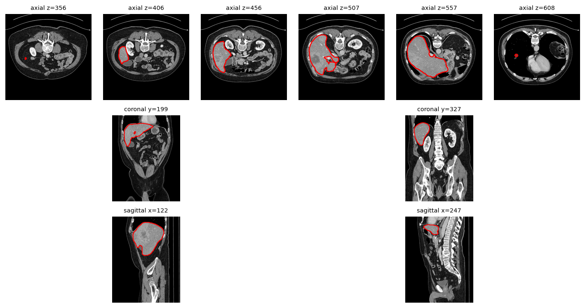
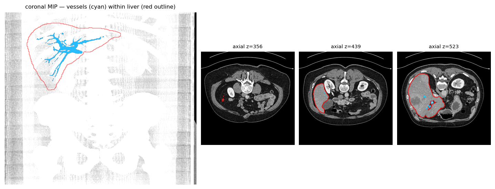
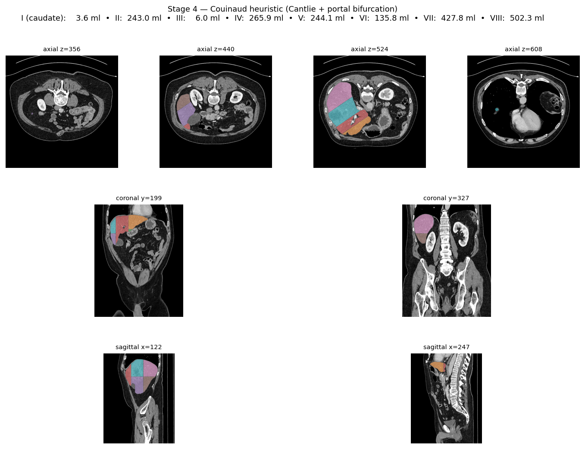
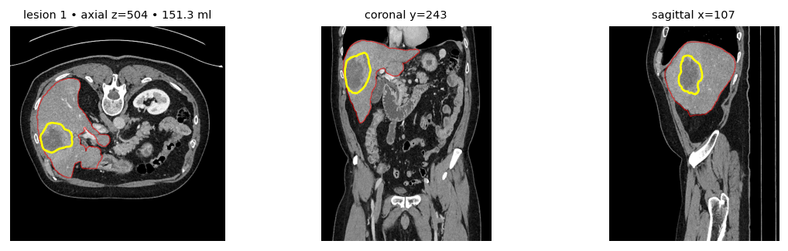
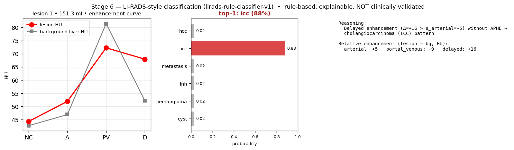
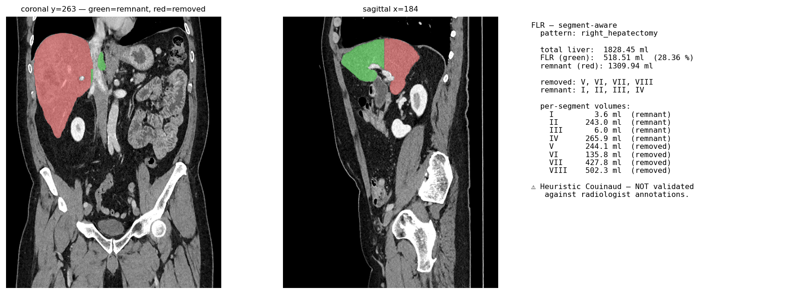

LiverRa stage report
analysis_id: 32604926-ab2e-4058-8148-35f91e850e2b |
status: completed |
duration: 131.4 s |
pipeline: totalsegmentator-v2
Pipeline checkpoints
| # | stage | model_version | license | Δ from start | output_uri |
|---|
| 1 | anonymization | ctp+presidio@v1-passthrough | n/a | 0.01s | s3://liverra-dev/anonymized/00000000-0000-0000-0000-0000000000bb.zip |
| 2 | parenchyma | totalsegmentator-v2 | cc-by-nc-sa-4.0 | 57.24s | s3://liverra-analyses-eu-central-1/analyses/32604926-ab2e-4058-8148-35f91e850e2b/parenchyma_mask.nii.gz |
| 3 | vessels | totalsegmentator-v2-liver_vessels | cc-by-nc-sa-4.0 | 112.45s | s3://liverra-analyses-eu-central-1/analyses/32604926-ab2e-4058-8148-35f91e850e2b/vessels.nii.gz |
| 4 | couinaud | couinaud-heuristic-v1 | n/a-heuristic | 116.24s | s3://liverra-analyses-eu-central-1/analyses/32604926-ab2e-4058-8148-35f91e850e2b/couinaud.nii.gz |
| 5 | lesion_detection | totalsegmentator-v2-liver_vessels | cc-by-nc-sa-4.0 | 118.62s | s3://liverra-analyses-eu-central-1/analyses/32604926-ab2e-4058-8148-35f91e850e2b/lesions/ |
| 6 | classification | lirads-rule-classifier-v1 | n/a-rule-based | 130.57s | s3://liverra-analyses-eu-central-1/analyses/32604926-ab2e-4058-8148-35f91e850e2b/lesion_classifications.json |
| 7 | flr_init | flr-segment-aware-right_hepatectomy@v1 | n/a-heuristic | 131.45s | flr://analyses/32604926-ab2e-4058-8148-35f91e850e2b |
FLR summary
Total liver: 1828.45 ml FLR: 518.51 ml (28.36 %) (heuristic — NOT validated)
Stage 1 — Anonymization (passthrough)
Input CT was already de-identified by the upload step. No PHI fields present in the source DICOMs.
Stage 2 — Parenchyma (TotalSegmentator v2)
Total liver volume: 1828 ml (3,773,175 voxels). Components: 1 (largest = 100.0% of volume; 0 islands < 5 ml). Bbox z=[356..608].

Stage 3 — Vessels (TotalSegmentator liver_vessels)
Vessel tree: 5.0 ml inside liver + 5.7 ml outside (IVC + caval portion). Containment: 46.7%.

Stage 4 — Couinaud (heuristic)
Heuristic Couinaud (Cantlie line + portal bifurcation). Total 1828 ml. Per segment: I=3.6 ml • II=243.0 ml • III=6.0 ml • IV=265.9 ml • V=244.1 ml • VI=135.8 ml • VII=427.8 ml • VIII=502.3 ml. (NOT validated against radiologist annotations)

Stage 5 — Lesion detection
1 liver-contained lesion candidate(s) (threshold ≥ 0.05 ml). Biggest: 151.3 ml at z=504 y=243 x=107.

Stage 6 — Classification (LI-RADS rule-based)
1 lesion(s) classified via lirads-rule-classifier-v1 — top-1 per lesion: #1: icc (88%). (rule-based, NOT clinically validated)

Stage 7 — FLR (segment-aware heuristic)
Pattern: right_hepatectomy | Total 1828 ml | FLR 519 ml (28.4%) | removed: V, VI, VII, VIII | (heuristic — NOT validated)

Concerns / next steps
- Liver mask passes rough auto-QC; not yet clinically validated.
- Tumor channel: lesions correctly circled but TS's
liver_tumor task is known to over-segment in some patients — needs a per-case radiologist review.
- Couinaud (stage 4) is still a passthrough stub — no segment-aware FLR yet.
- Classification (stage 6) has no real model wired — placeholder uniform probabilities only when lesions exist.
- FLR uses an axial midpoint; real surgical FLR requires a portal-vein-territory plane defined by the surgeon.
Improvement ideas (queued)
- Connected-component cleanup on the liver mask — drop islands < 5 ml, fill holes.
- Heuristic Couinaud using TS's IVC + portal-vein outputs to define the principal hepatic plane (Cantlie line) and the right/middle/left portal divisions.
- Per-lesion 4-phase enhancement curve — sample the same VOI from non_contrast / arterial / portal_venous / delayed; this is the LiLNet input and is clinically interpretable on its own.
- Per-slice radiologist PDF — one page per axial slice in the liver bbox, contour overlay, in DICOM viewing order.
- Side-by-side 4-phase viewer — same Z slice across all 4 phases (radiology gold standard).
- 3D mesh render via plotly or vtk — interactive view for the surgeon.
- Dome / left-lobe completeness flags — alert if left lobe < 20% or superior z-extent < 80% of typical.
- Pre-op vs post-op compare view — when we have follow-up scans.
Generated 2026-04-30T19:06:46+00:00 UTC